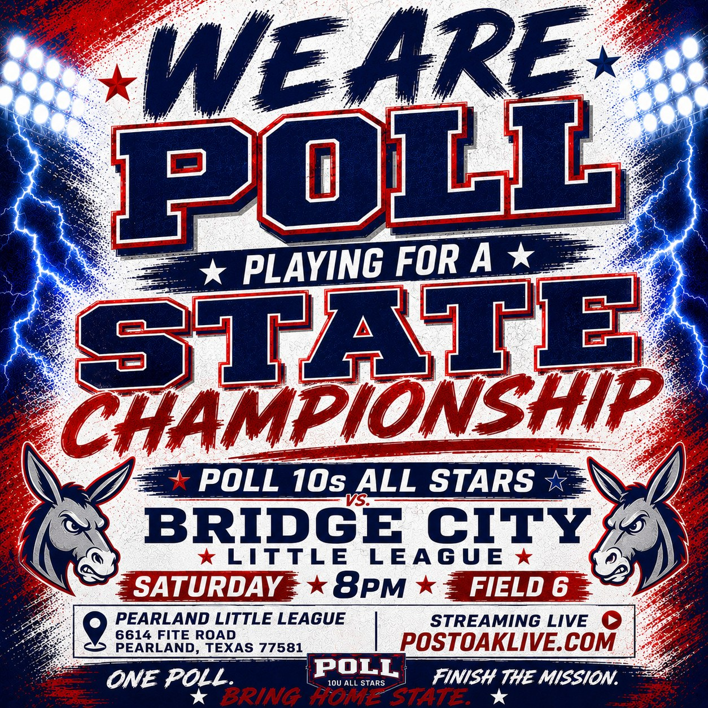

POST OAK 10S
ALL STARS
Post Oak Little League • State Tournament Coverage
Playing for a state championship.
The streaming home for Post Oak Little League’s 10s All Stars — live game access, tournament energy, and the moments worth replaying.
Built for tournament week
Fast paths to the action.
01 / Live
Watch Us Live
Open the livestream page for the cleanest available game-day experience, tuned for phones, tablets, and big screens.
Open live page
02 / Featured
State Hype Video
Watch the Post Oak 10s All Stars hype video directly on this site using a self-hosted HTML5 player.
Watch hype videoCurrent Feature
Post Oak 10s All Stars
A dedicated home base for the state tournament run — direct, polished, and fully Post Oak.

Post Oak Little League
10s All Stars
State Tournament
Houston Baseball